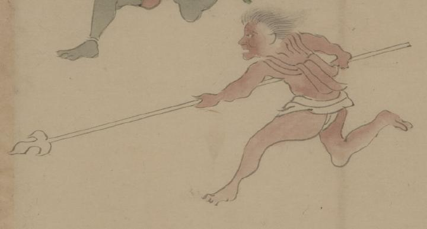

護法童子；ゴホウドウジ，鬼；オニ，槍；ヤリ

三つ叉槍を持つ護法童子。肌は赤く、鬼のような姿である。肩布のようなものと褌のみを身につけて、槍を構えて走っている。
出典：親書誌：U426_nichibunken_0150：付喪神絵詞；ツクモガミエコトバ／日付：2010／資源識別子：U426_nichibunken_0150_0094_0000
Copyright (c)2010- International Research Center for Japanese Studies, Kyoto, Japan. All rights reserved.